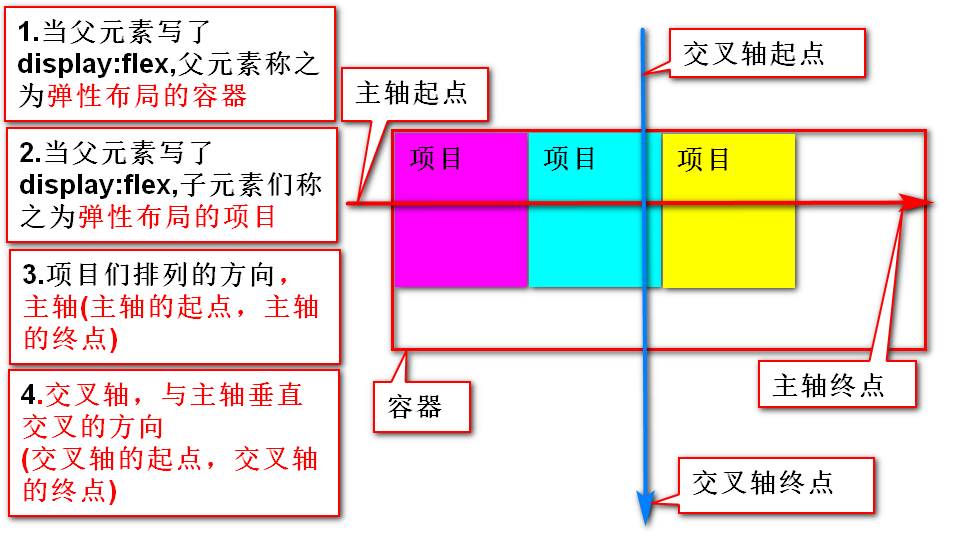
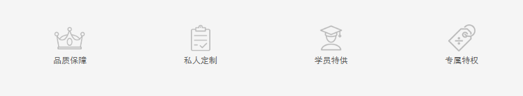

作业
作业1.使用弹性布局完成学子商场首页1F作业2：复杂选择器，弹性布局的所有属性，单词和效果 作业3：确保webstrom10 确保可以正确使用(注册码的问题)
3.伪类选择器
①目标伪类target
②结构伪类
elem:first-child{} 代表两个条件
匹配elem的父元素的第一个儿子（elem的大哥）
这个大哥必须是elem元素
elem:last-child{}
匹配elem的父元素的最后一个儿子(elem的小弟)
这个最小的弟弟必须是elem元素
elem:nth-child(n)
匹配elem的父元素的第n个儿子(n从1开始)
这个儿子也必须是elem元素
练习
01_ex 4*4的表格 200px*200px. 有边框，内容随意
需求：表格第一行背景为红色
表格最后一行最后一列的背景为蓝色
表格第三行第二列背景为黄色
③匹配空元素
:empty{}
空元素
空元素：没有文本，没有空格，没有其他子元素的元素
④:only-child
匹配，当前元素是其父元素的唯一的子元素
⑤否定伪类
:not(selector)
/*除了第一个a标签，其它a的字体都变成黄色 */
a:not(:first-child){color:#ff0;}
/*除了第三个a标签，其它a的字体都变成蓝*/
a:not(:nth-child(3)){color:#f0f;}
4.伪元素选择器
①内容伪元素
1::first-letter{ } 或 :first-letter{}
匹配首字符的样式
2::first-line{ } 或 :first-line{}
匹配首行的样式
当首行和首字符冲突的时候，以首字符为准
3.::selection{} 必须是两个 ::
匹配选中部分的文字样式
注意：只能改变字体颜色和背景颜色
②伪元素选择器，内容生成
使用css，添加httml元素，称之为伪元素内容生成
:before 或者 ::before
匹配到某个元素的内容区域的最前面，
添加一个内容，content：添加的文本或者图片
display：是设置这个添加的内容的显示规则
::after 或者 :after
匹配到某个元素的内容区域的最后面，添加一个内容
注意：content中，只能添加文本或者图片
我们可以理解为在内容区域中，最前或者最后面，添加了一个元素。这个元素的显示方式，由display来设定
③伪元素内容添加，可以解决的问题
1.外边距溢出
#parent::before{
content:"";
display:table;
}
2.思考，伪元素内容添加，解决高度坍塌？
#d1:after{
content:"";
display:block;
clear:both;
}
1.什么是弹性布局 是一种布局方式 主要解决某个元素中子元素的布局方式 为布局提供很大灵活性 2.弹性布局相关的概念和名词解释  1.容器 要发生弹性布局的子元素，他们的父元素称之为容器 容器要设置属性display:flex; 2.项目 要发生弹性布局的子元素们，称之为项目 就是设置了display:flex那个元素的，子元素们 3.主轴 项目们在容器中排列的方向，就是主轴 如果项目横向排列，x轴就是主轴 如果项目纵向排列，y轴就是主轴 项目们的排列顺序，靠主轴的起点和主轴的终点来定义 4.交叉轴 与主轴垂直相交的一条轴，叫做交叉轴 项目们在交叉轴上的对齐方式，是交叉轴的起点和终点 3.语法 display，写在父元素中 取值：1.flex 将块级元素设置为容器 2.inline-flex 将行内元素设置为容器 特点： 1.弹性项目，默认x是主轴，主轴起点在左侧 (块级元素横向排列的第二个解决方案) 2.项目的float/clear/text-align/vertical-align属性失效 3.每个项目可以自由的设置尺寸 4.容器的属性 ①主轴的方向 flex-direction: 取值： row默认值，主轴是x轴，主轴起点是左端 row-reverse,主轴是x轴，主轴起点是右端 column 主轴是y轴，主轴起点是顶端 column-reverse 主轴是y轴，主轴起点是底部 ②设置项目换行 flex-wrap: 取值 nowrap 默认值，容器空间不够，也不换行，项目自动缩小 wrap 空间不够就换行 wrap-reverse 换行并反转 ③主轴方向，项目换行的缩写 flex-flow: 取值 direction wrap ④定义项目在主轴上的对齐方式 justify-content: 取值 1.flex-start 默认值，以主轴起点对齐 2.flex-end 以主轴终点对齐 3.center 在主轴上居中对齐 4.space-between 主轴两端对齐，两端无空白 5.space-around 每个间距大小相同 ⑤项目在交叉轴上的对齐 align-items: 取值1.flex-start 交叉轴起点对齐 2.flex-end 交叉轴终点对齐 3.center 交叉轴居中对齐 4.baseline 交叉轴基线对齐 5.stretch 前提，项目不写高，占满交叉轴上所有的空间 练习 06_ex,ul>li 配合弹性布局完成  5.项目的属性 ①order 定义项目的排列顺序 取值，无单位整数，值越小，越靠近主轴起点 ②flex-grow 定义项目的放大比例 如果容器有足够大的剩余空间，项目将按比例方大 取值：无单位的数字 默认值0，不放大 ③flex-shrink 定义项目缩小的比例，容器空间不够时，项目该如何缩小 取值，无单位数字 默认值1. 取值越大，缩小比例越大。0，不缩 ④align-self 设置此项目在交叉轴上的对齐方式，不影响其它项目 取值：flex-start flex-end center baseline stretch auto 使用容器定义的align-items的值
div{
background:-webkit-linear-gradient(....);
background:-o-linear-gradient(....);
background:-ms-linear-gradient(....);
background:-moz-linear-gradient(....);
}
由于不同的浏览器对css的解析认知不同，会导致同一份css在不同浏览器中生成页面效果不同
面对这种情况，开发人员需要针对不同浏览器写不同的css
这个行为，就叫做css hack
tmooc有css hack相关拓展视频
1.什么是转换 改变元素在页面中的位置，大小，角度，以及形状 2D转换。只在x轴和y轴发生的转换效果 3D转换。增加了z轴的转换效果。3D是模拟出来的 2.转换的属性 transform: 取值 1.none 默认值，无任何转换效果 2.transform-function 转换函数 表示1个或者多个转换函数 如果是多个转换函数，每个函数之间用空格分开 transform:translate(400px) rotate(90deg); 学习转换，就是学习转换函数
作业1.使用弹性布局完成学子商场首页1F